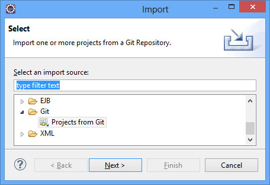
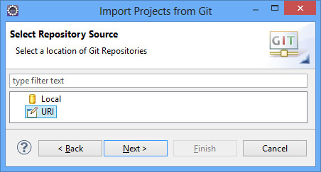
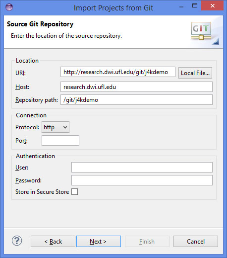
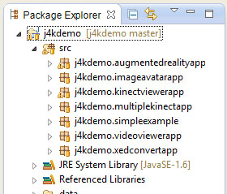
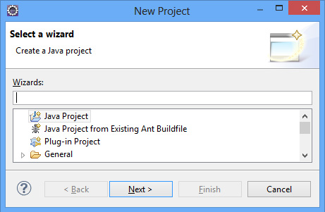
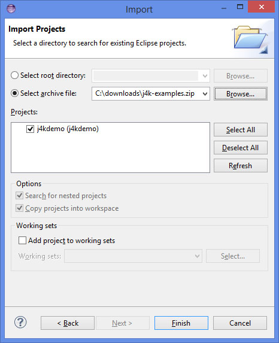
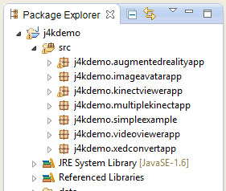

UFDW Java library
J4K Java library
J4KSDK.class API
DepthMap.class API
Skeleton.class API
VideoFrame.class API
Source Code Examples
SimpleExample
VideoViewerApp
KinectViewerApp
AugmentedRealityApp
ImageAvatarApp
XEDConvertApp
MultipleKinectApp
J4K Projects Gallery
Published Papers
Download
Install in Eclipse
Watch video tutorial
People
Frequently Asked Questions
J4K Java library
J4KSDK.class API
DepthMap.class API
Skeleton.class API
VideoFrame.class API
Source Code Examples
SimpleExample
VideoViewerApp
KinectViewerApp
AugmentedRealityApp
ImageAvatarApp
XEDConvertApp
MultipleKinectApp
J4K Projects Gallery
Published Papers
Download
Install in Eclipse
Watch video tutorial
People
Frequently Asked Questions
How to setup a J4K project in Eclipse (from Git)
This tutorial will guide you on how to setup your workspace in eclipse in order to use the J4K library in your own Java-based Kinect-enabled projects. To help you start working with J4K, several simple source code examples are provided and can be installed in eclipse by following the instructions given in this tutorial. You can also watch a video tutorial [VIDEO LINK].
Step 1 of 3. Download required files
This tutorial assumes that you have already installed eclipse in your computer. If you are new to eclipse, you can download it from www.eclipse.org and install it in your computer. Eclipse is a very popular and easy-to-use environment for developing software applications in Java as well as other programming languages.
By now you should have installed eclipse and you can now proceed to the next step.
Step 2 of 3. Import J4K source code examples from Git
Open eclipse, and from the 'File' menu select 'Import...' and then select 'Git' > 'Projects from Git'.

Select the 'URI' option and click 'Next'.

Type the URI of the git repository as shown in the image below and then click 'Next' (a few times) and 'Finish'. The link to the Git repository is the following: http://research.dwi.ufl.edu/git/j4kdemo

After that, the new project in the project explorer should appear as it is shown in the image below.

Step 3 of 3. Execute sample applications
The provided J4K source code contains several example applications. Each of these applications can run as standalone Java application or a Java applet. From the project explorer expand the folder of the corresponding application and then open the ...App.java or ...Applet.java file. To run the example click on the green play button on the top of the eclipse window, or from the menu select 'Run' > 'Run', or use the shortcut Ctrl+F11.
Enjoy!
How to setup a J4K project in Eclipse (manually)
Step 1 of 3. Download required files
This tutorial assumes that you have already installed eclipse in your computer. If you are new to eclipse, you can download it from www.eclipse.org and install it in your computer. Eclipse is a very popular and easy-to-use environment for developing software applications in Java as well as other programming languages.
Download the source code of the J4K examples from the Source Code Examples web-site. The source code of all the available examples is provided in 1 zip file.
By now you should have downloaded 1 ZIP file and installed eclipse in your system and you can now proceed to the next step.
Step 2 of 3. Import Java project
Open eclipse, and from the 'File' menu select 'Import' > 'General' > 'Existing Projects into Workspace'

A dialog window will open (similar to the one shown below).

Select 'Archive File' and click 'Browse' to find the zip file you downloaded in step 1 with the J4K source code. After that click on 'Finish'. The j4kdemo project should appear in your project explorer as shown in the image below.

Step 3 of 3. Execute sample applications
The provided J4K source code contains several example applications. Each of these applications can run as standalone Java application or a Java applet. From the project explorer expand the folder of the corresponding application and then open the ...App.java or ...Applet.java file. To run the example click on the green play button on the top of the eclipse window, or from the menu select 'Run' > 'Run', or use the shortcut Ctrl+F11.
Enjoy!
Disclaimer: The names JAVA and KINECT and their associated logos are trademarks of their respective copyright owners Oracle and Microsoft. None of these companies endorse, fund, or are in any way associated with the J4K library.
Disclaimer: This software is provided for free without any warranty expressed or implied for academic, research, and strictly non commercial purposes only. By downloading this library you accept the Terms and Conditions.